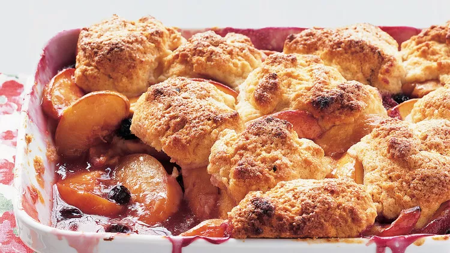

Peach-Blueberry Cobbler

Description
Fresh peaches and blueberries are baked beneath a fluffy layer of vanilla-cream biscuits. The tops are brushed with heavy cream and sprinkled with sanding sugar for a crispy-sweet crunch. When Martha made this recipe on Martha Bakes episode 301, she omitted the blueberries.
Ingredients
- 2 ¾ pounds peaches, halved lengthwise, pitted, and cut into ¾-inch-thick wedges (about 8 cups)
- 1 cup blueberries, (about ½ pint)
- ⅔ cup granulated sugar
- 3 tablespoons cornstarch
- 2 tablespoons packed light-brown sugar
- 1 tablespoon freshly squeezed lemon juice
- 1 teaspoon finely grated, peeled fresh ginger/li>
- Salt
- 2 cups all-purpose flour
- 2 teaspoons baking powder
- ½ cup cold unsalted butter, (1 stick), cut into small pieces
- 1 vanilla bean, halved lengthwise
- 1 cup plus 2 tablespoons heavy cream, plus more for brushing
- Sanding sugar, for sprinkling
Steps
- Preheat oven to 375 degrees. with racks in upper and lower thirds. Stir together peaches, blueberries, 1/3 cup granulated sugar, the cornstarch, brown sugar, lemon juice, ginger, and a pinch of salt in a large bowl. Transfer to a 12-by-8 1/2-inch (2-quart) baking dish; set aside.
- Whisk flour, baking powder, 1/2 teaspoon salt, and remaining 1/3 cup granulated sugar in a medium bowl. Cut butter into flour mixture using a pastry blender or 2 knives to form clumps that are no larger than small peas.
- Scrape vanilla bean seeds into the cream; stir with a fork to combine. Discard pod. Add cream mixture to flour mixture; stir until a soft, sticky dough forms. Divide dough into 10 equal pieces; arrange over filling. Brush dough with cream, and sprinkle with sanding sugar.
- Place a parchment-lined baking sheet on bottom rack of oven to catch juices. Bake cobbler on top rack directly over the baking sheet until topping is golden brown and juices are bubbling, 55 to 70 minutes. If topping is browning too quickly, cover loosely with foil. Let cool on a wire rack 1 hour before serving.